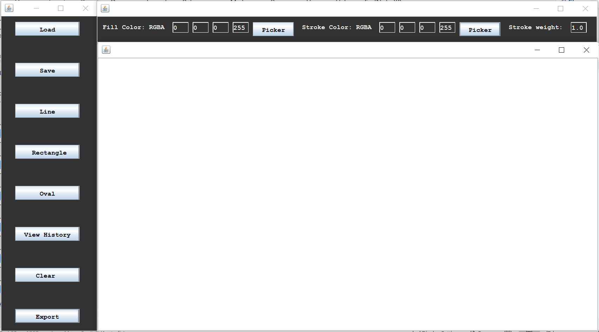

About
I am a current student at RMIT University studying Surveying. I am interested in:
Programming/Software Development
Cadastral Surveying
Game Development
Rock Climbing
Running
Outside of university I work in both the cadastral surveying industry and the climbing industry. In my spare time I work on my programming, art, and music skills with my game development, in which I aim to produce a game that I can one day sell. I spend a lot of my time keeping fit with my running, and rock climbing. Rock Climbing is my favourite sport and i have competed at a national level in the 3 disciplines, lead, speed, and boulder, and have climbed both indoors and outdoors on many occasions. Keeping fit with running has led to me running in some charity events including the wings for life, where I doubled my longest distance run, and completing my first half marathon distance run.
Geospatial Science Projects
Land Development - Wurin Estate
This was completed as part of the Land Development course at RMIT with one of my classmates. Together we designed implemented and refined the pictured estate. The project required multiple steps from creating and planning a road network, completed adjustments to hit the required percentages for unrestricted parkland and housing lots, along with the types of lots. After completing the based design, key criteria from the local planning scheme were implemented to place in building envelopes lighting, fire hydrants and public transport stops. Along with the final designs several reports were produced about the decision-making process, along with completing the required paperwork to file this plan (as this was an assignment no plan was filed). This project was an interesting experience in the field of Land Development and allowed for understanding in the entire planning process.
Java Based Drawing Tool

This project was completed as part of a Java Development course, the aim of this project was to create a tool that allow drawing with the massive restrictions on getting user input and displaying images, as the system that was required had these elements already implemented. The tool works around an inability to click on the screen to get inputs, and stored inputs by computing a lists of coordinate pairs, and can draw lines, rectangles, circle and add text. The ability to edit the image is handled in a manor like illustrator, using a list of drawn objects that can be modified. The software also allowed for saving and loading of files using the coordinate information. Onload these files would be read and drawn from top to bottom. Finally, the software has the ability to export the drawn image to PNG or JPEG.
Geospatial Science Major Project

My major project for my Bachelor of Applied Science (surveying) Honours, if based around estimating the usability of RNSS (Regional Navigation Satellite Systems). The systems used are QZSS (Quasi Zenith Satellite System) and NAVIC (NAVigation with India Constellation) along with a combined solution using both systems. The method for analysis uses ADOP (Ambiguity Dilution of Precision) which calculates the ability to resolve ambiguities in the carrier phase of positioning signals. The aim of the project was to produce 2 data series, a 24-hour average and an instantaneous time series. These two datasets were created by mapping the computed ADOP values across the extent of Australia. For the 24-hour averages the process was repeated at 10° cut-off elevations intervals from 0° to 40°. The time series was at 1-hour steps at a 10° elevation. The final part of the project was to build an application to allow for any point in time to have its ADOP value estimated. This application produces the same map as the time series, but allows for users to make more choices such as with the availability cut of elevation or any point in time.
Game Development Project
2D Maze To 3D Environment
This was created ion attempt to create a way of generating a 3D environment from a 2D set of lines, to replicate a similar style to something seen in early PC games such as DOOM. The program was creating in the Java Language using software created for artists called Processing. This software had an inbuilt canvas and drawing tools. The project created a point in space that would send out a series of rays. If these rays intersect with line created from pairs of points used to determine the distance from the radiation point to the intersection. The distance was then used to create a vertical rectangle where the height is scaled based on distance. To mimic a floor and a ceiling, the background had 2 separate colours, the floor being darker than the ceiling. The colour scheme used solely blue, with the low contrast, and pixilation of the top and bottom of the walls giving the effect that this could have been an early style game. To the left of the generated maze, the visitation of the program in 2D was shown including a visible representation of the rays. This help with navigating the environment, and testing for bugs.
The Nine Realms (Title Pending Change)
This is my first project that I am attempting in the Unity Engine, which is a power full piece of software that reduces the need for creating many systems, such as particle systems or physics systems. The Game is intending to be a 2D Metroid Vania style game like Hollow Knight, A game Created by Team Cherry, which is something that I played through and thoroughly enjoyed. Other source of inspiration are Dark souls, a challenging 3D Metroid Vania with harsh combat mechanics, and God of War PS4, which while more linear, but has in depth and well-developed mechanics in combat, word traversal, and strong character interactions. The underlying reason for these being sources of inspiration is their ability to create immersive worlds that feel like they are more than just what the player sees, and where the players actions fell like they have meaning and effect on the surrounding environment. Currently I am developing a movement system, that aims to be smooth, and paced at a medium speed, with the ability to be tweaked upon creating more level designs. I am also currently designing several environments that I would like in the game. I am aiming to continue working on designs to develop characters, enemies, and world environments that can be converted into game models. I have also been working on developing my skill with music so that I will be able to create a soundtrack which. I have been attempting to create a possible theme for a boss fight which can be listened to with the audio element.